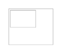
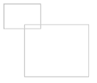
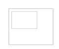
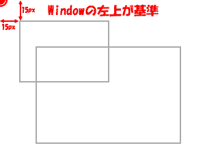
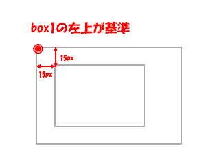

前知識
position:relative;自体は、文字を位置に移動させるのですが。これをposition:absolute;と併用すると、色々とおいしい使い方が出来たりします。
これを使うためにはちょっと前知識が必要なので、CSS2の仕様書の和訳から、一つ二つ引用させて頂きます。
まずは包含ブロックという考え方から…。
CSS2では、ボックスの位置やサイズの多くを、包含ブロック（containing block）と呼ばれる矩形ボックスの四辺を参照することによって計算する。
一般に、ある要素が生成したボックスは、その子孫ボックスの包含ブロックとして機能する。
このことを、ボックスが子孫のために包含ブロックを「設定する」（"establishes"）と表現する。
「ボックスの包含ブロック」（"a box's containing block"）と表現した時、それは「そのボックスが含まれている包含ブロック」（"the containing block in which the box lives"）を指すのであり、「そのボックスが設定する包含ブロック」（"the one it generates"）を指すのではない。
そして、position:relative;の説明では…。
相対配置のボックスは、通常に流し込まれる子供要素と位置指定される子孫要素のために、新しく包含ブロックを設定する。
とあります。これで意味が通じたでしょうか？ ほとんどの人がこれだけでは通じていないと思われますので、これからサンプルを使いながら解説していきましょう。
実例
まずは、このサンプルをご覧下さい。ボーダーと大きさを指定して、作例が見やすくしてありますが、基本的なタグは下の様になっています。
サンプル１

<body>
<div id="box1">
<div id="box2">
</div>
</div>
</body>
これに下の様にプロパティを追加します。
/* Window左上の位置にボックスを移動 */
div#box2 {
position:absolute;
top:15px;
left:15px;
}
出来たのがサンプル２
サンプル２
Window左上の位置に、box2が移動しているのが分かりますか？
さてさて、ではここからは本題です。このサンプルにスタイルシートを下の様に追加すればどうなるのでしょう？
/* 基準位置の変更 */
div#box1 {
position:relative;
}
これを書き足すとサンプル３の様に表示されます。box2がbox1の内側に戻ってきていますが、この仕掛けの意味が分かるでしょうか？ 今回の話のポイントはここにあります。
サンプル３
ここではposition:relative;を追加することで、box1に包含ブロックが設定されて、子要素であるbox2の基準位置が変わっているんですね。
そんな言い方しても通じませんが、つまりは、今回起こったことを図に表すと
| position:relative;適用前 | position:relative;適用後 |
|---|---|
|  |  |
という風になっていたりします。
最後に
上で紹介したposition:relative;での基準位置変更ですが、positionの値に、absoluteやfixedを入れても基準位置の変更はおこりますが、relativeだと、topやleftの値が0のままだと、box1の表示位置の変更がおこらないので、色々と使い道が多かったりします。
え？ 作例が欲しい？ え、えーと、追々考えます…。